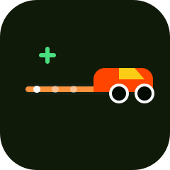
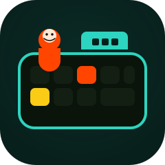

Race is a 30 second typing race on the classroom WiFi. The teacher hosts it from this laptop. Students join with a name. No internet.
An after-school coding club for South African kids — learn to code, build, and think like engineers. No experience needed.
Thinka Games is Thinka’s classroom fork of Blockly Games. It teaches programming with colourful blocks, then steps toward real JavaScript. The pack is offline-first: after a build it runs from a folder or ZIP, with no gallery, analytics, or cloud save.

Race is a 30 second typing race on the classroom WiFi. The teacher hosts it from this laptop. Students join with a name. No internet.

Keys is a typing game: home-row lessons, a race, and coding words (if, else, while) that lead into Maze.

Puzzle is a quick introduction to Blockly's shapes and how the pieces snap together.

Maze is an introduction to loops and conditionals. It starts simply, but every level is more challenging than the last.

Bird is a deep-dive into conditionals. Control-flow is explored with increasingly complex conditions.

Turtle is a deep-dive into loops. Use nested loops to paint a picture.

Movie is an introduction to mathematical equations. Use math to animate a movie.

Music is an introduction to functions. Use functions to compose music.

Pond Tutor introduces text-based programming. Levels switch back and forth between blocks and actual JavaScript in a text editor.

Pond is an open-ended contest to program the smartest duck. Use either blocks or JavaScript.
Levels unlock as you go. Teachers can type the shared classroom password to open a locked level. It starts as thinka. From the small Teacher link on the games page, enter the current password, then save a new one, reset back to thinka, or remove the password. That choice stays in this browser’s local storage, on this computer. Set it once on each laptop.
Thinka’s mission is to make sure all children, especially those in underprivileged communities, have the opportunity to learn the language of technology. Learn more at thinka.org.za.